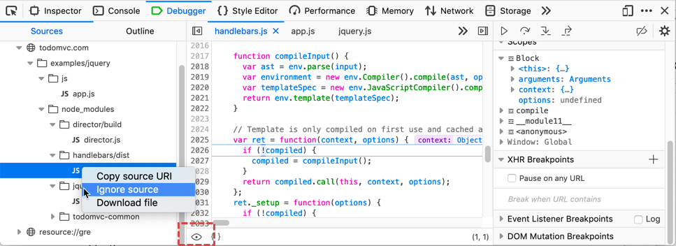

In modern web development, we often rely on libraries like jQuery, Ember, or Angular, and 99% of the time we can safely assume that they “just work”. We don’t care about the internal implementation of these libraries. However, a library’s abstraction leaks during debugging sessions when you are forced to step through its stack frames in order to reach your own code. However, you can tell the debugger to ignore the details of selected sources.
You can enable or disable ignoring a source file in a couple of ways:

When a source file is ignored: